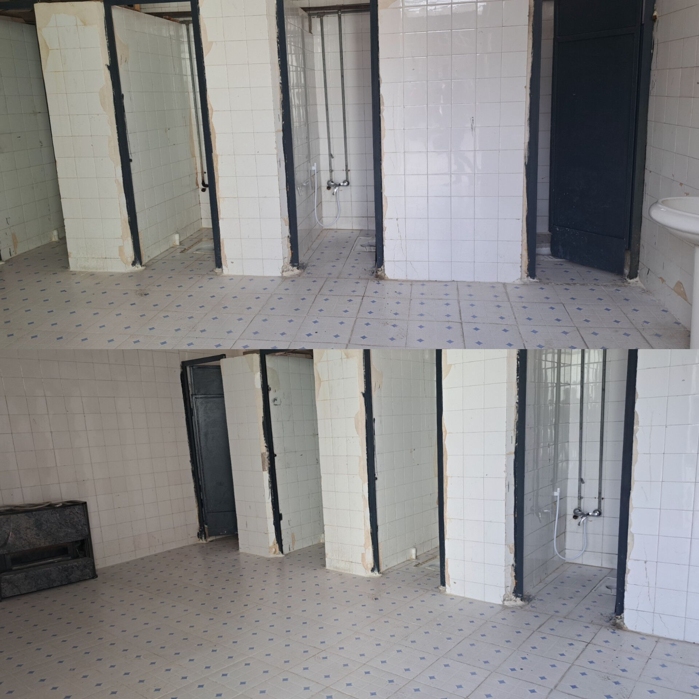

لیست بلاگهای پروژه مهر
خرید تورهای جدید دروازه،والیبال و اقلام درخواستی دانش آموزان
۱۴۰۴/۰۷/۱۵
تورهای ورزشی جدید برای ارتقای امکانات ورزشی دانشآموزان خریداری شد.
بخوانید
شناسایی نقاط آسیب پذیر
۱۴۰۴/۰۷/۱۳
نقاط ضعیف مدرسه شناسایی و برنامهریزی برای تعمیرات انجام شد.
بخوانید

شستشو و نظافت کلی کف و دیوارهای سرویس بهداشتی دانش آموزان.
۱۴۰۴/۰۷/۱۲
نظافت کامل سرویسهای بهداشتی برای بهداشت بهتر دانشآموزان.
بخوانید

تفاوت ورودی درب آموزشگاه و تابلوی مدرسه در سال جدید و سال گذشته
۱۴۰۴/۰۷/۰۹
تغییرات ظاهری ورودی و تابلو برای سال تحصیلی جدید.
بخوانید

تعمیر درب کلاس های طبقه بالا و نصب دستگیره های جدید
۱۴۰۴/۰۷/۰۱
تعمیر دربها و نصب دستگیرههای مدرن برای راحتی.
بخوانید
آماده سازی کتاب های درسی جهت توزیع در روزهای ابتدایی ماه مهر
۱۴۰۴/۰۶/۲۸
آمادهسازی و توزیع کتابهای درسی برای شروع سال تحصیلی.
بخوانید